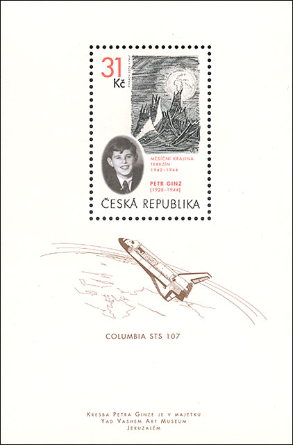
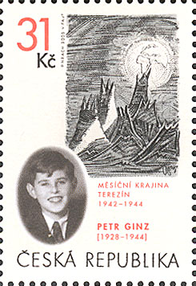
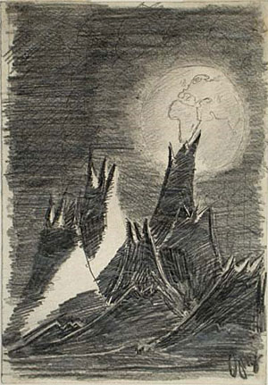
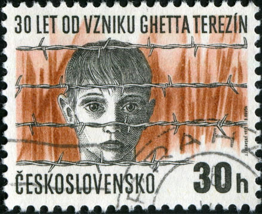
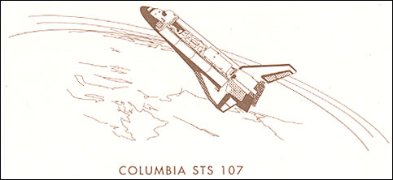
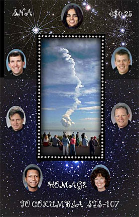

| Created 10/31/09. Revised:
10/31/09
. Copyright © 2009 by Victor Manta, Switzerland. All rights reserved worldwide. |
|
I got the miniature sheet (MS) shown below by chance, and I was immediately intrigued by what it shows. A rather strange landscape and a boy in oval, than the name Terezin and the years 1942 - 1944, that unleashed in my mind some bad memories about a Theresienstadt ghetto in former Czechoslovakia, occupied by the Nazis. The "Yad Yashem Art Museum Jerusalem" inscription on the bottom of the sheet confirmed my supposition, and told me also that this MS is about a work of art.
But what's about this image of a space ship, put in the middle of the MS? Is it just another attempt of a postal administration to mix different topics on a stamps, in order to cause as many as possible collectors to buy it?

Then I suddenly noticed that as well on the drawing as on the MS is displayed the image of the Earth, as seen from the space, which seemed to connect both subjects. This excited even more my curiosity, so much that I started some searches on the Internet and in my world catalogues. What I learned was about two unrelated tragedies, which made this MS one of the most interesting from my quite extensive collection of art stamps.From the German version of Wikipedia I learned that Petr Ginz, born the 1st of February 1928 in Prague and killed in September 1944 in the Nazi concentration camp Auschwitz, was a very young Czech graphic artist and writer. He was the son of a Jewish Czech father Ota and a Czech mother Marie, who lived during the Shoah in Prague and was detained in the ghetto Terezin (Theresienstadt). He was a talented graphic designer, who also wrote poems as well as novels inspired by Jules Verne. Aged 14, he was the first and only editor and publisher of the magazine Vedem in the ghetto.
One of his drawings, presented below, shows a Moon landscape, with a big Earth and its continents that appear in the background of the work of art.
 |
 |
After I published this page, I got a tragic and nice stamp scan through the newsgroup RCSD (thanks, Rodney!). Issued in 1972 (Scott 1801), it commemorates the 30 years passed since the Terezin camp was created by the Nazis.
Hitler, the world was told by the Nazi propaganda, had built a city for the Jews, to protect them from the vagaries and stresses of the war. A film was made to show this mythic, idyllic city to which his henchmen were taking the Jews from the Czech Lands and eight other countries. Of the vast majority of Czech Jews who were taken to Terezin (or Theresienstadt), 97,297 died among whom were 15,000 children. Only 132 of those children were known to have survived. Source.
Petr's drawing became famous after the Israeli astronaut Ilan Ramon took with him a copy of it with the space shuttle Columbia. Col. Ilan Ramon's mother is an Auschwitz survivor. Ramon's grandfather and other family members perished in Nazi death camps. This fully explains the image of the space shuttle on this MS.

Shortly after the crash of Columbia's shuttle the sister of Petr, Eva Pressburger, who survived the Holocaust, was informed that parts of her brothers' diaries were found in a loft in Prague. Petr described in them the continual limitations of the rights of the Jews and the started deportation of his Jewish neighbors during the German occupation of Prague, between the 19th September 1941 and the 9th of August 1942. The German edition of the diaries, together with drawings and six poems and stories from the time of Theresienstadt ghetto, was published in 2006.
The MS was issued on January 20, 2005, as result of a petition started on July 4, 2003 by a largely known stamp collector and philatelic webmaster from Prague (who is also my long time acquaintance from the major philatelic RCSD newsgroup, and a PWO member), Bret Janik.
The STS 107 crew.
Col. Ilan Ramon is on the right, near the flag of Israel.

Above is presented the MS that the author of this site designed for the SNA PA, shortly after the crash of the Space Transportation System 107. This was the last flight of the Columbia space shuttle. At the time I designed the MS I didn't know that it will be strongly related to another MS, that will be issued two years later by the Czech PA.
| Created 10/31/09. Revised:
10/31/09
. Copyright © 2009 by Victor Manta, Switzerland. All rights reserved worldwide. |
|